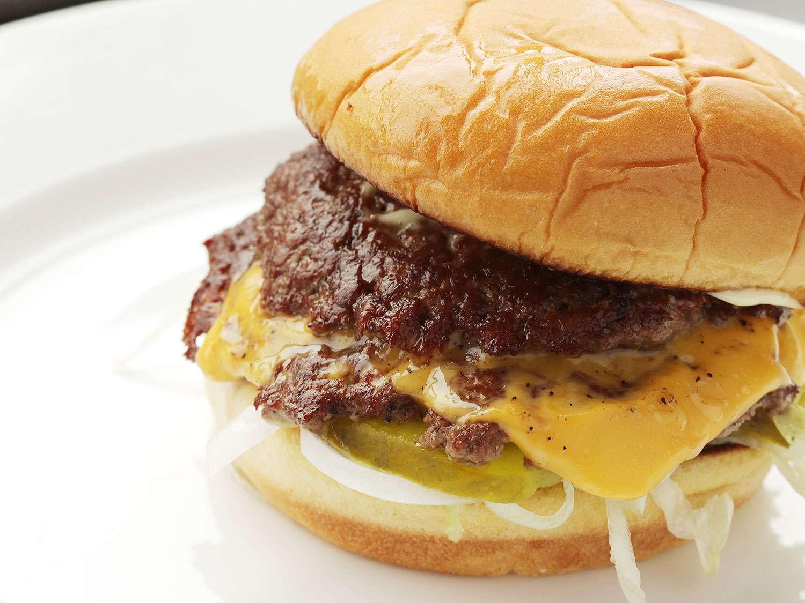

Smashed Cheeseburger

Hamburger expert George Motz shares his recipe for a Smashed Burger. A
simple, no frills, delight.
Ingredients
- 2-lbs. Freshly-ground chuck
- 8 White squishy buns (Arnold, Wonder, Martin's, etc.)
- 1 Vidalia onion, sliced paper-thin on a mandolin (onion slicer)
- Salt
- Butter
Instructions
-
Place a well-seasoned cast iron skillet over medium-high heat. If the
pan looks dry, add a tiny bit of canola or vegetable oil to lubricate
and heat for a few minutes.
-
Place your ground beef in a large mixing bowl. Do not add anything to
the meat (that would be meatloaf).
-
Using a salad or ice cream scooper (not your hands) grab a wad of beef a
little larger than a golf ball and drop into the hot pan.
-
Sprinkle liberally with salt then press flat with a very sturdy spatula
with no holes. It is important that you press only once, into the shape
of a patty, then leave it alone. Any more pressing will send precious
juices out into the pan.
-
Cook for approximately 1-minute and a half per side and you are done. It
is that simple.
I like to sauté Vidalia onions to put on top and that's about it.
Sometimes I also smash raw, thin-sliced onion in the patty at the
beginning, a favorite of any burger joint in El Reno, OK.